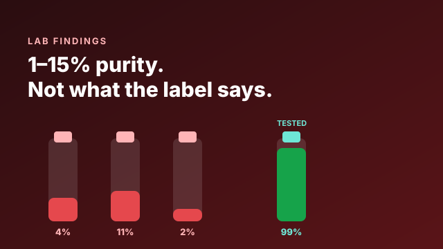

How we stopped 15,000 Aussies injecting 1–15% purity

It's the number people stop scrolling for: over 15,000 Australians have used our testing to catch dangerously impure peptides before injecting them. Some of those vials came back between 1% and 15% purity. Here's what that actually means — and how we got to a number that large.
What "1 to 15 percent purity" means
Purity, in HPLC terms, is the proportion of the sample that is the target compound — the peak you want, divided by everything the detector sees. A result of 99% means almost all of the material is the peptide on the label. A result of 8% means 92% of what's in that vial is something else.
Sit with that. If a vial tests at 8% purity, the overwhelming majority of the contents are byproducts, residues, fillers or unknowns. You weren't dosing a peptide with a little impurity. You were dosing impurity with a little peptide.
At single-digit purity, the label isn't slightly wrong. It's describing a product that barely exists in the vial.
How a vial ends up that bad
- Failed or skipped purification. Synthesis is only half the job; purification is expensive and easy to cut.
- Degradation. Poor storage and transit — heat, moisture, time — quietly destroy peptide before it ever reaches you.
- Deliberate dilution. Cutting active compound with cheap bulking agents stretches margins at your expense.
- Substitution. A different, cheaper molecule sold under a premium name.
How the number grew
We didn't set out to protect fifteen thousand people. We set out to answer one question, one vial at a time: is this what it claims to be? Six years of doing that — for brands first, then for individuals directly — adds up. Every test that came back below spec was a person who got to make a different decision before the needle, not after.
Word spread the way it does when the stakes are this personal. Someone gets a shock result, tells their training partner, who tests theirs, who tells the group chat. Testing became the thing careful people do before they trust a source — and the count kept climbing.
What we want you to take from it
Not fear — information. A single independent test converts a leap of faith into a known quantity. It costs a fraction of a bad outcome, and it takes 72 hours.
If you're injecting something you haven't tested, you're trusting a stranger's printer. Don't be number 15,001 who wishes they'd checked.